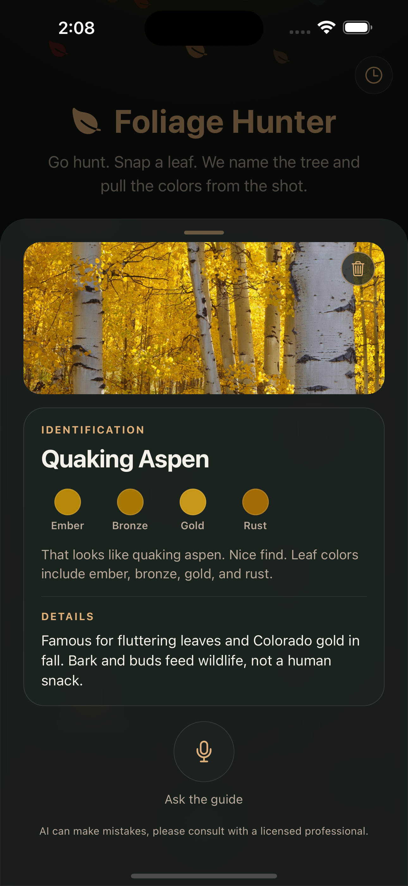
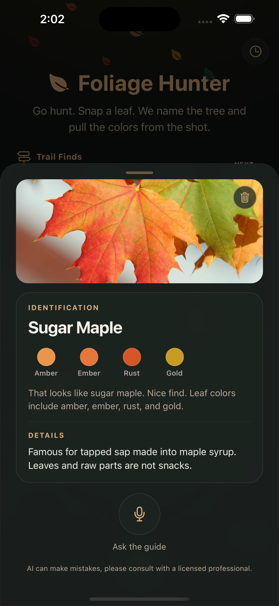
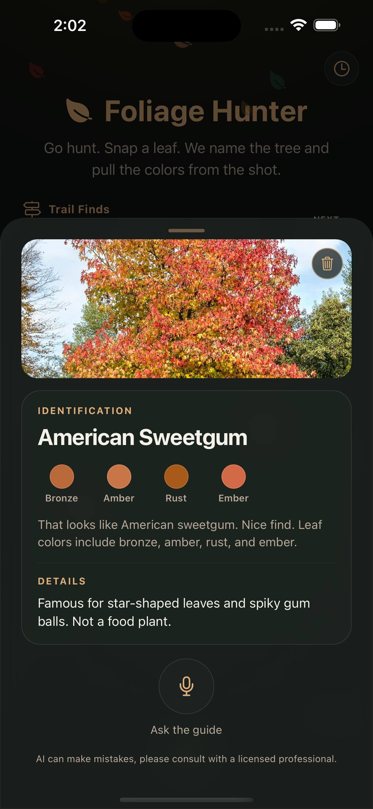
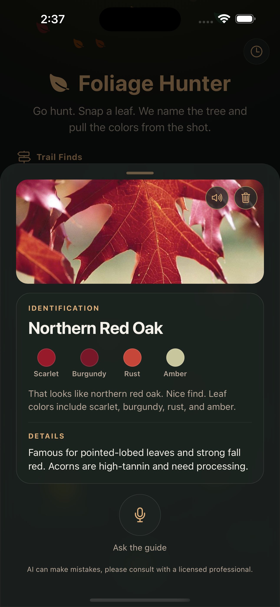
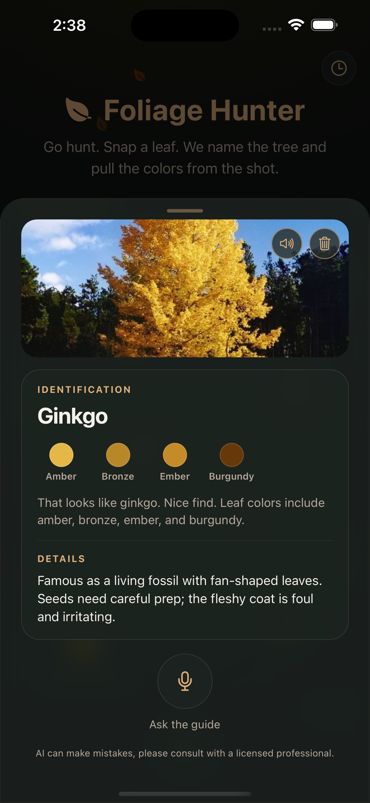
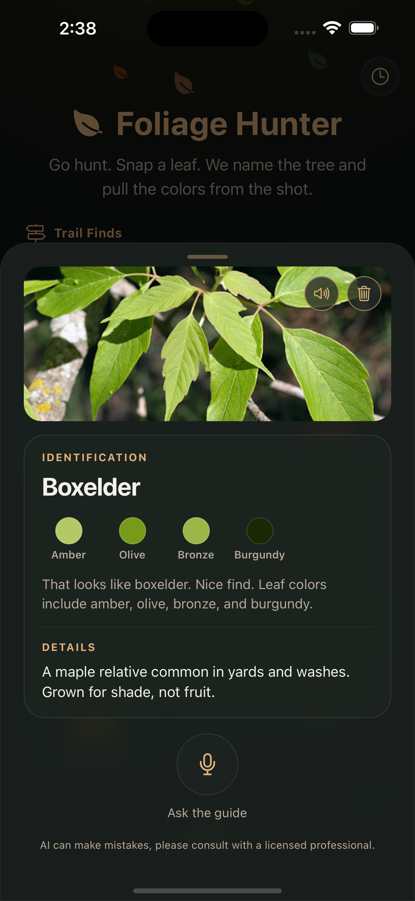

Quaking aspen
That looks like quaking aspen. Nice find. Leaf colors include ember, bronze, gold, and rust. Famous for fluttering leaves and Colorado gold in fall. Bark and buds feed wildlife, not a human snack.
Magpie TTS lines from real Foliage Hunter finds. GitHub READMEs cannot host a real audio player, so these clips live here.

That looks like quaking aspen. Nice find. Leaf colors include ember, bronze, gold, and rust. Famous for fluttering leaves and Colorado gold in fall. Bark and buds feed wildlife, not a human snack.

That looks like sugar maple. Nice find. Leaf colors include amber, ember, rust, and gold. Famous for tapped sap made into maple syrup. Leaves and raw parts are not snacks.

That looks like American sweetgum. Nice find. Leaf colors include bronze, amber, rust, and ember. Famous for star-shaped leaves and spiky gum balls. Not a food plant.

That looks like northern red oak. Nice find. Leaf colors include scarlet, burgundy, rust, and amber. Famous for pointed-lobed leaves and strong fall red. Acorns are high-tannin and need processing.

That looks like ginkgo. Nice find. Leaf colors include amber, bronze, ember, and burgundy. Famous as a living fossil with fan-shaped leaves. Seeds need careful prep; the fleshy coat is foul and irritating.

That looks like boxelder. Nice find. Leaf colors include amber, olive, bronze, and burgundy. A maple relative common in yards and washes. Grown for shade, not fruit.